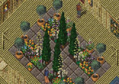
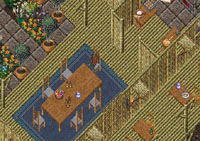
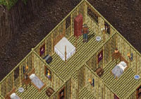

連 綿不絕的雨怎麼下都下不停，繼上次失蹤後在這村落中已等待許久哩，等著有認識的人來援助我離開。
這天突然村長說來了一隊身穿『藍+黑』的戰士在銀行找失蹤的人
，我趕緊到銀行一看果然是CV老師們，[DBM]
公會全來接我哩真是開心。
原來CV老師們所到達的地方是村子南方很遠的古老神殿，還找到了上次才拜訪過的神石，確認了這裡正是人們口中流傳的『失落大陸』，而且沒想到這裡還有村莊呢。
回到村長家，也就是當地唯一的旅館，我向村長介紹了
[DBM]
公會全體會員：現任會長 D'、ChicoV II 老師、死神XXdeath、前 [DBM]
會長 V-Devil、醉刀客 Kand (偷學的-_-)，幾乎公會裡所有的精銳戰士都到齊哩
(只缺Saterina......)。而村長見到了 death後忽然驚訝的說不出話來......
「你好啊，Wesley村長，好久不見哩。」death似乎想起了什麼......
「你、你、你是死神 death！？」「是啊，我已經不再是以前那個小毛頭囉。」村長忍不住激動的流下眼淚「你真的是
death 啊~~~~嗚嗚~~~~」接著就抱住death痛哭....
「我們全村都很非常想念你們....看，小Ruby已經長這麼大了......」
村長指著他那個女兒......哇哩咧....@_@
「她想你很久了...」Ruby對著death笑......
眾人：「................................」
( 難、難道！她就是death一直在找的『摯愛』！？
＠ˍ＠||| )
「呃....我肚子痛去買酒肉填肚！」CV老頭語無倫次、一秒說完十個字就溜出去了(死老頭跑得真快
-_- )....不久就聽到有人在外面狂笑......而D'和V則在一旁裝死......「呃....剛剛逃走那位就是『琳娜』的老爸....」death好不容易找到話可講....
「嗯...小琳娜啊...那你們結婚了吧？」「＠ˍ＠！」「什麼！！那種又兇又善變的女人我才不要！！」death
急著狡辯「給 Mel 才可能要她吧！」喂！這又干我啥事了啊！？
「麥激動 -_-，Power他還好吧？」村長和藹的目光又掃視了眾人一次，「他去當皇家騎士隊隊長跑到某個地方躲起來了-_-」「對啊，Mel要去當兵可能會遇到Power喔~~」D'也開了金口....
「ㄟ~~~請問一下，」我忍不住發問「你們啥時認識的，我怎麼不知道？還有誰又是小琳娜啊？(
怎麼聽起來很熟的感覺 -.- ) 村長也認識Power嗎？」
我一連問了三個問題....「嗯......好吧
，我來說說當年的事件吧......」村長喝了一口茶，要大家放輕鬆坐下。
「death你怎麼啦？你要來講嗎？」
「我....失去了一部分記憶......」
death深吸一口氣吐出了這句話......
「.............說吧...............」
原來當時XXdeath(死神)、Saterina(琳娜)和Powereast(Power)三人，以及另外兩位初級冒險者(分別叫JAZZ和Blue)，經過
Britain地下水道遺蹟 而誤闖未經開化的 失落大陸(The Lost
Lands)。
當他們五人長途跋涉到這個村莊Papua時，居然碰上一條來自不明時空的古代魔龍
(註1.)，正在橫掃整個失落大陸。由
原大陸 Britannia 移民而來的村民，好不容易才剛建立起這個村落，便要面對惡龍來襲的噩運....
他們一行人身心在旅途中激烈的戰鬥後極為疲憊，終於依地圖的指示找到Papua，高興的才要進村找個地方休息，就見好幾顆被召喚的隕石從天而降，將眼前的村子夷為一片火海！接著就見一條巨龍在四處屠殺村民...
由於death他們的實力都只能勉強算是初級，連最小的亞龍都不可能贏的了，更別說是現在這頭極為兇惡的巨龍，五個人當下立刻散開尋求掩護。不斷的殺戮終於引起了一個小孩的哭聲，這個小孩就是Ruby。
此時巨龍注意到哭聲，緩緩地轉頭過來...「Ruby危險啊！！」當時只是一般村民的Wesley瘋狂喊叫，但仍然無濟於事。
眼看Ruby就要被大火烤焦，忽見一個黑影衝過去抱起Ruby，接著一個翻身躲在石牆之後，原來是死神death！
身上完全沒有防禦能力的Ruby雖然全身灼傷無數，但總算是得救了
。 JAZZ低身行進到death身邊，小心地接過Ruby。
「交給你了...... JAZZ」看著可憐無辜的Ruby，death突然神情一變，手緊握著蛇劍便立刻衝到這頭惡龍面前，「死魔龍納命來吧！啊啊啊啊啊~~~~！！！」邊喊邊從正面衝過去，巨龍似乎感受到了death無比的氣勢，馬上別過身去用肥大的尾巴把death重重的掃了出去....
「嗚....可惡....」正當巨龍得意的想過來享受血腥佳餚時，death突然高舉身旁的長戰槍站了起來，出其不意地在極近距離下直射巨龍左眼！「吼哇~~~~！！」巨龍痛得抬起前腳連退數步，倒地時還把地面震得隆隆作響。
當然只有這樣是不足以擊倒這條可怕的生物的....。巨龍掙扎過後，極為憤怒的狂向death吐出一發又一發的火球，death只能原地躲在巨型方盾後奮力抵擋，但不久就被烤到盾牌整個爛掉。
「death快逃啊！！」琳娜見death精疲力竭，不由得跑向death幫忙抵抗這頭充滿憤恨的巨獸，好讓death有時間能夠逃走....不料巨龍眼裡只有death一個，便馬上起身吸氣用龍之燄來攻擊在前方擋路的琳娜
，千鈞一髮之際 Power 飛身撲倒琳娜，卻當場身受烈焰猛擊而不醒人事......
「P...Power？」Saterina嗚咽地低聲呼喚...，Power
過了一下子才恢復意識....「我...還好...走...快去救死神...」，Power奮力起身咬牙說道：「快...死神危險！」
兩人立刻就往村人指的方向追去；death逃往Papua的北方，在一道極深峽谷上方的一座吊橋前面終於不支倒了下來......
在那個時候，如果不幸陣亡的話，就真的死定了........附近沒有人會復活 (Papua全毀)，death他們也沒有人會；沒有護靈結界
(註2.)，沒有美德神殿，沒有來援的義勇軍，連HELP之神、YOUNG之神的祝福都沒有......
Power 和琳娜終於追上了，看見death跪倒在地上發抖，而巨龍停在death旁邊，正準備做出最後一擊....「吼~~~~~~~！！！」巨龍張大它的滿嘴利牙，對準地上的death猛然向下俯衝！！！
出乎意料之外！巨龍居然吃了滿嘴泥巴....「阿哈哈哈哈....我的絕學厲害吧。」death安然的站在吊橋上。這回巨龍真的是氣瘋哩，把嘴裡的泥土一口吞下，然後怒氣沖沖的向death一步步接近。
「轟~~~~~~！」death慘遭巨龍施法雷擊，剛用盡所有力量使出『藏鏡瞬移』的他，再也沒有力氣站起來了....
death的視線開始模糊，但仍慢慢地往後爬，巨龍也同樣的愈來愈接近death......
「只有這樣了...」琳娜對Power使了個眼色，然後將巨龍背部當作練習的標靶，搭起了她的弓，深吸一口氣...「咻~~~~~~」箭如流星般劃過，不偏不倚命中巨龍背部雙翼的中心；巨龍哀吼了一聲，雙翼如失去知覺般垂落，卻頭也不回、毫不在乎的繼續往death逼進....
此時death不再後退，右手反覆勾繞著橋邊的繩索起身，左手則掏出身上最後的匕首，露出了得意的笑容，來面對巨龍最後的噬咬....
說時遲那時快！Power 趕到了吊橋的這一端，雙手提起長劍便往吊橋上的主繩用力砍下！！
「喔喔喔喔喔~~~~~~」death在巨龍失去重心的同時奮力往它右眼補上一刺！「吼吼嗚嗚嗚∼∼∼~~~~~~~~~~~」在第二條主繩也接著被砍斷的同時，巨龍終於墜落深谷，結束了一場空前的災難......
(註1.)
並非"遠古巨龍(Ancient Wyrm或Elder Wyrm)"，為另一種未知的古代龍。
(註2.) 請參考
[DBM]大冒險 => 世界觀設定 => 關於死亡
「死神他還自己從斷橋爬上對岸喔；然後邊休養邊緞鍊住了一兩個月才告別Papua。後來他們再度來訪時已是我當上村長後的事了
。」村長把故事作了個結尾，大家便將目光集中到death身上....
「我...我想起來了......但...不是CHI嗎......Power...啊......不對...是另一次......」看來death現在心思非常混亂，連平常最沒煩惱的Kand也說不出任何話來。此時CV老師終於回來哩......
我喝掉手上的茶，順手把杯子遞給收拾桌面的Ruby，直到聽到一聲「謝謝」，才發現她並不是想像中的那樣，其實還挺討人喜歡的...如果容貌和外表能恢復的話..........
原來Power就是在那時候認識的呀......而當時XXdeath和Saterina不告而別失蹤了一個多月，就是因為打老鼠打到誤闖失落大陸啊..........
( 該不會是去渡蜜月吧 >< 我的 Rina >< )
至於
CHI，我從來沒聽過death提起這個人吧？他和death又做過了什麼轟轟烈烈的事？
『藏鏡瞬移』？這又是啥？聽起來很像我還沒成為真正的小偷前所學的隱形小把戲......
還有那條魔龍到底是什麼來歷啊？death這麼常會掛，竟然曾經有那樣英勇的表現？這天晚上我腦中一片迷霧......(待續)
Mel Davey